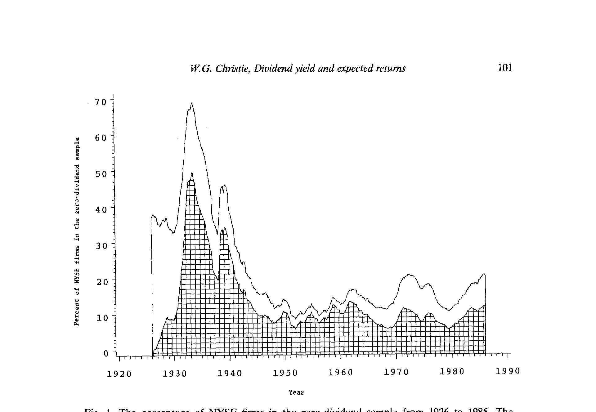
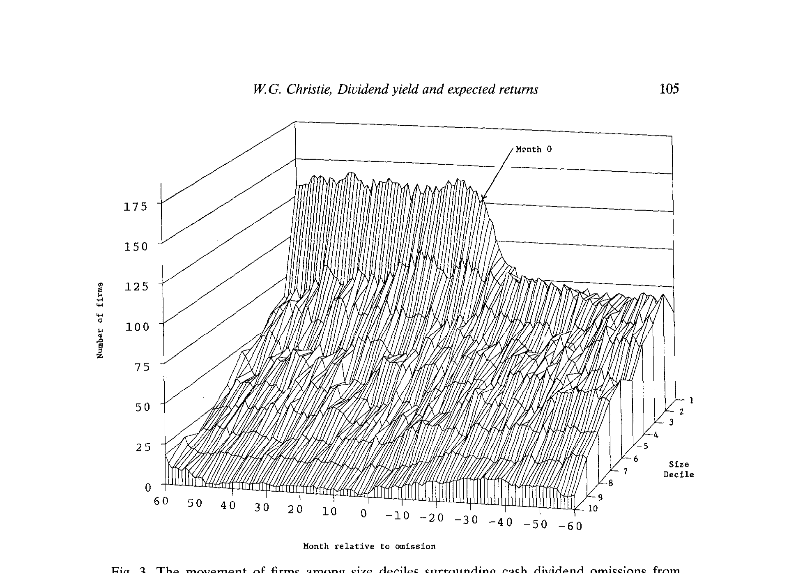
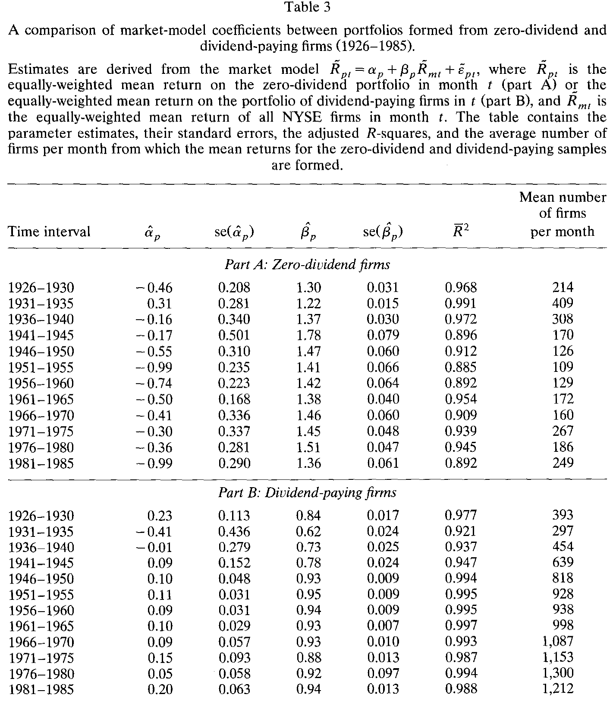
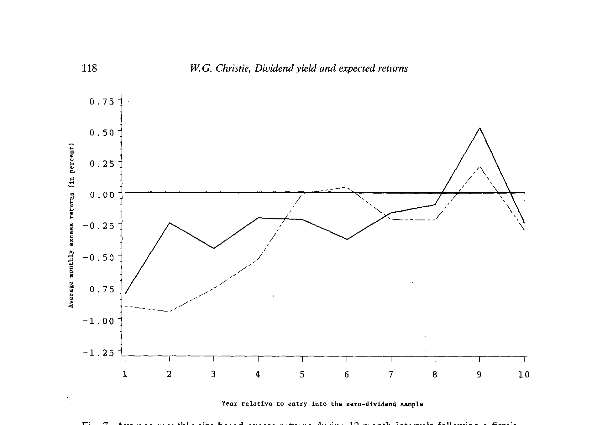
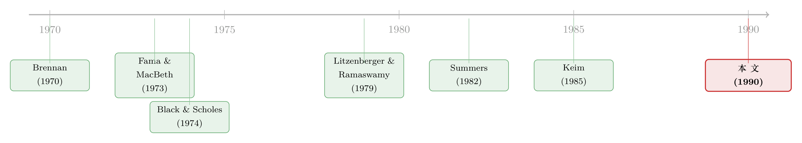

不分红的股票，到底该比谁都贵，还是比谁都贱？
本文读的是 Christie (1990, Journal of Financial Economics)：当你不再用 CAPM、而是拿「同等规模」的公司当尺子去量零股利公司时，那个著名的「U 形之谜」会翻个面——零股利公司不再赚取异常高的收益，反而赚取显著为负的超额收益，量级逼近 每月 −1%，且集中在它们「刚刚变成零股利」的头几年。表面上这像极了税收模型的预言，可作者证明：单凭税收，撑不起这么大、这么集中的折价；真正的嫌疑人，是「分红预期」。
1 引言：一个该贵还是该贱的悬念
先从一个看似无害的问题开始：一家完全不分红的公司，它的股票，期望收益应该高，还是应该低？
直觉上，税收会给你一个干净利落的答案。在历史上，股利相对资本利得是要多交一道个人所得税的——这就是 Brennan (1970) 那套税后资本资产定价模型 (after-tax CAPM) 的出发点：既然分红要被多剐一刀，那么高股利的股票就必须用更高的税前收益来补偿投资者。于是预期收益与预期股利收益率之间，应当是一条向上的直线。沿着这条直线往左走到尽头——股利收益率为零的那一端——这些不分红的公司，理应是收益最低的一群。
故事到这里都很顺。然而，真正去做这件事的人却撞了墙。
2 一个被「方法」喂出来的 U 形
把税后 CAPM 写成一个可估计的横截面回归，标准做法是在 Brennan 的基础上加一个零股利哑变量。论文里的 (2) 式大致长这样：
$$E(R_{it}) = \gamma_0 + \gamma_1 \beta_{it} + \delta_1 d_{it} + \delta_2 D_{it} + \varepsilon_{it}$$
这里 \(\beta_{it}\) 是系统性风险，\(d_{it}\) 是预期股利收益率，\(D_{it}\) 是一个对零股利公司取 1 的哑变量。如果税收故事成立，\(\delta_1\) 应当显著为正，而 \(D_{it}\) 不过是顺手把「零」这一端也纳进来。
接着，一个尴尬的结果出现了。Litzenberger 与 Ramaswamy (1980, 1982)、Blume (1980)、以及 Elton、Gruber 与 Rentzler (1983) 都发现：\(\delta_2\) 不仅显著为正，还反过来抬高了 \(\delta_1\) 的显著性与量级。换句话说，在分红公司之间，预期收益确实随股利收益率线性上升；可一旦把零股利公司单独拎出来，这条线就被折断了——这些不分红的公司，赚到的均衡收益，竟然高过除最高股利组以外的所有公司。
于是收益与股利收益率的关系，画出来不是一条直线，而是一个 U 形：两端高，中间低。这就麻烦了。税收故事只能解释「右半边」（高股利要补偿），却解释不了「左端突然翘起来」。
人们当然不肯善罢甘休，纷纷给左端找理由。Summers (1982) 说这是风险：如果股利相对稳定，风险变化会先反映在当前价格里，于是高风险对应高股利收益率——而零股利公司若恰好比最低股利公司更危险，U 形左端的翘起就有了着落。Elton-Gruber-Rentzler 则给了个微观理由：零股利股票通常每股不到 5 美元，不能用作保证金，要诱使投资者持有，就得给更高的税前收益。Litzenberger-Ramaswamy 也提过卖空限制下的「不分红股需付溢价」之说。
这些解释各有各的道理。但 Christie 的切入点更釜底抽薪：他怀疑，这个 U 形根本不是经济规律，而是研究方法喂出来的——一来是「怎么识别零股利公司」，二来是 CAPM 方法没把规模这个变量摁住。
3 识别：到底什么才算「零股利」
先说第一处。以往的研究怎么定义月度股利收益率？用过去 12 个月的现金分红除以 13 个月前的股价：
$$d_t = \sum_{\tau=t-12}^{t-1} \frac{DIV_\tau}{P_{t-13}}$$
这个定义看似无害，却埋着两类系统性误判。其一，一家公司若在上次付息三个月后宣布停发下一次季度分红，按这个口径，它在随后整整九个月里仍被当成「分红公司」，只是一路滑向越来越低的股利组——它要等满 12 个月，才被算进零股利样本。其二，若一家公司停发后又在 12 个月内恢复派息，那么它的零股利月份会被这个定义完全抹掉。
Christie 的应对是放弃这个滞后口径，转而用分红的发起、停发、恢复的公告日期来给公司分类。他从 CRSP 出发，逐一甄别三类零股利区间：从未付过息的（非分红公司）、上市后迟迟才首次派息的（分红发起公司）、以及相邻两次除息日间隔超出其支付频率两个月以上的（分红停发公司）。再用 Poor's、Moody's、《华尔街日报索引》等多个原始资料逐条核验公告日。一套筛下来，4,392 个候选区间先因不规则/未明分红被压到 2,952 个，再经核验删掉 424 个，最终留下 2,532 个零股利区间——其中非分红公司 296、分红发起 456、分红停发 1,780。
这套识别有多重要？看一眼零股利公司在 NYSE 中的占比就明白了：1933 年大萧条最深处，近 50% 的 NYSE 公司都停过现金分红；二战之后，这个比例才骤然回落（其中一部分波动，Christie (1990) 那篇工作论文归因于 1936–1937 年的未分配利润税）。识别口径稍有偏差，捞进或漏掉的就是成百上千个区间。

Figure 1: The percentage of NYSE firms in the zero-dividend sample from 1926 to 1985. The
4 换一把尺子：用规模来丈量风险
第二处，也是全文真正的支点：别再用 CAPM 的 β 去调整收益了，改用规模。
Keim (1985) 早就点破：零股利组和最高股利组里，都塞满了小公司。而小公司本身就有那个尽人皆知的「规模效应」超额收益。于是用 CAPM 调整出来的所谓「异常收益」，很可能只是规模效应在冒充股利效应——U 形的左端，没准就是小公司在那儿撑着。（关于「一月里小公司换仓」的那条暗线，可参见《一月效应背后，是谁在悄悄换仓？》。）
Christie 的做法干净利落。每个月 \(t\)，先按上月末市值把所有公司排进 10 个规模十分位 (size decile)；在每个十分位内部，再按预期股利收益率把公司分成「零股利」和四个股利四分位，共五个收益类别。然后，一家公司的期望收益，被定义为「同一规模十分位内、但属于其他收益类别的公司」的平均收益：
超额收益，就是实现收益 \(R_{i,t}\) 减去这个期望。它的妙处在于：「同规模」这把尺子，已经把规模效应吸收掉了——零股利公司只跟和它一样大、但分红不同的公司比，谁也别想拿「我小所以我该赚得多」来蒙混。
这把尺子还有两个 CAPM 给不了的好处。其一，传统 β 模型（如 Blume 1980、Keim 1983/1985）需要 60 个月的历史收益来估 β，于是新上市的零股利公司在头五年里被生生丢掉；而规模模型只需上月末市值，公司上市当月就能进样本。Christie 估算，仅此一项，就把以往被漏掉的非分红公司的 50%、分红发起公司的 60% 重新捞了回来（见表 2 各类公司停留月数的分布）。
其二，也更微妙——规模会随风险变化而每月重排。Christie 发现，公司在停发分红前的六个月里市值急剧缩水，一路迁入最小的规模十分位（图 3）；停发前后的规模分布，与正常时期判若两样。换句话说，「停发」这件事本身就伴随着剧烈的风险跳变，而每月重排恰好把这种跨股利政策的风险变化吃进了基准里。

Figure 3: The movement of firms among size deciles surrounding cash dividend omissions from
那么零股利公司到底有多「险」？用组合 β 来看，结论惊人地稳健。把零股利公司打包成一个等权组合，跑市场模型回归：
$$R_{pt} = \alpha_p + \beta_p R_{mt} + \varepsilon_{pt}$$
在 1926–1985 的每一个五年区间里，零股利组合的 \(\beta_p\) 都显著大于 1.0：从 1.22、1.30、1.37 一路到 1941–1945 年的 1.78，1981–1985 年仍有 1.36。而同期分红公司组合的 β 大多落在 0.62 到 0.95 之间。两者之差不仅大，而且在所有市值水平上都高度显著——零股利公司确实是一群高 β 的家伙。

Table 3
5 反转：负的超额收益，与那个说不通的「税」
铺垫到这里，真正的反转来了。
换上规模这把尺子之后，U 形消失了。零股利公司不再赚取异常高的超额收益，反而赚取显著为负的均衡超额收益——而且它恰好是「正股利收益率公司那条收益序列的自然延伸」。也就是说，把零股利端摆正之后，整条关系是单调的，根本没有什么左端翘起。先前那个 U 形，被坐实为 CAPM 没控住规模时的幻象。
可这里有个让人差点拍案叫绝、又差点上当的地方：负的超额收益，恰好是税后定价模型所预言的——零股利没有税收惩罚，理应赚取更低的税前收益。难道兜了一圈，税收故事反而赢了？
Christie 的第二次反转，把这条路也堵死了。他指出，这些负的超额收益有两个特征，是税收无论如何解释不了的：一是量级太大，逼近每月 −1%；二是时间太集中，几乎全部堆在公司「刚刚被划为零股利」之后的头几年里，而非均匀地铺在整个零股利期间。一个稳定的、制度性的税收楔子，不该制造出这种「头重脚轻」、又如此剧烈的折价。

Figure 7: Average monthly size-based excess returns during 12-month intervals following a firm’s
那真凶是谁？是分红预期效应 (dividend-expectation effect)。回想识别设计：公司在第 \(t\) 月是按 \(t-1\) 月的股利状态分类的，于是与分红发起、恢复相关的正向公告效应，会落进零股利样本；而停发带来的负向财富效应，则落进分红样本。一家刚停发、或即将发起/恢复分红的公司，市场是会就「未来分红」重新定价的——这种预期冲击，在公司「初入/将出」零股利身份的那几年里最猛烈，正好对上了负超额收益在时间上的集中分布。说到底，这是信息，不是税收。（把分红里的「信息含量」和别的成分拆开来量，是一类经典做法，可参见《拆股的那 2.1%，到底有多少是「股利」给的？》。）
于是「零股利之谜」被重新讲了一遍：它从来不是「不分红的股票为何贵得反常」，而是「当我们既没量准规模、又没认清这些公司正处在分红政策的剧烈切换期时，方法替我们编了一个谜」。
6 文献脉络
这条线的起点是 Brennan (1970)：税后 CAPM 把「股利要多交税」写进了均衡收益，预言收益与股利收益率正相关。紧接着 Fama 与 MacBeth (1973) 给了横截面检验的标准工具箱，后来所有人都在用它估这条关系。
然后是一场旷日持久的拉锯。Black 与 Scholes (1974) 说「看不出关系」；Litzenberger 与 Ramaswamy (1979, 1980, 1982) 一口咬定「税收效应显著为正」，还顺手发现零股利哑变量为正、把 U 形捅了出来；Blume (1980)、Gordon 与 Bradford (1980)、Morgan (1982)、Elton-Gruber-Rentzler (1983) 大体站在「正相关」一边；Miller 与 Scholes (1982) 则继续唱反调。U 形左端的解释也百花齐放：Summers (1982) 押注风险，Elton-Gruber-Rentzler 押注保证金，Litzenberger-Ramaswamy 押注卖空限制。
真正把「方法」摆上台面的是 Keim (1983, 1985)：他发现零股利组和高股利组都被小公司占满，规模效应正在污染股利效应的识别。Christie (1990) 顺着这条线再进一步——不是修补 CAPM，而是整个换掉 β、改用规模做风险代理，并辅以极为细致的零股利识别，最终把 U 形翻成单调的负超额收益，又把这负收益从「税」手里夺给「分红预期」。

7 评论与延伸（Q&A + 研究方向）
Q：用「规模」当风险代理，会不会只是用一个异象去解释另一个异象？
这是最该警惕的地方。规模效应本身就是个未被理论收编的异象，拿它当风险尺子，逻辑上确有「以毒攻毒」之嫌。Christie 的辩护是务实的：在数据稀缺、样本充斥小公司、且风险随政策剧烈切换的场景下，规模比 β 更可观测、且能每月重排以吸收风险跳变。但这把尺子的合法性，终究是经验性的、而非理论性的——它解决了 CAPM 的具体缺陷，却没回答「规模为何定价」。
Q：负超额收益既然「符合」税后模型，凭什么说税收不是主因？
靠的是量级与时间结构这两条旁证。每月逼近 −1% 的折价，远超合理税收楔子所能解释；而它高度集中在零股利身份的头几年、而非均匀分布，更像一次性的预期重定价，而非一道恒定的制度性税负。符号对得上，不等于机制对得上。
Q：把分红发起/恢复的公告效应「故意」留在零股利样本里，是不是一种构造性偏误？
恰恰相反，这是有意为之、且无前视偏误的设计。公司按 \(t-1\) 的状态分类、用 \(t\) 的收益度量，确保只用了当期可得的信息。发起/恢复的正效应进零股利样本、停发的负效应进分红样本，这种「错配」本身就是识别分红预期效应的杠杆——它让负超额收益的时间集中性成为可检验的含义。
Q：为什么零股利公司的 β 会稳稳大于 1，而分红公司只有 0.6–0.95？
与 Summers (1982) 和 Keim (1985) 的观察一致：不分红的公司往往更小、更年轻、更脆弱，系统性风险更高。图 3 进一步显示，公司在停发前市值急剧缩水、迁入最小规模十分位——「变成零股利」与「变得更险」常常是同一件事的两面。
Q：这套结论只适用于 NYSE 和 1926–1985，外推性如何？
谨慎为宜。样本是 NYSE 普通股，且正式的收益分析被限制在 1946–1985 的战后年份（因为大萧条期间某些规模十分位里根本没有分红公司，无法估期望收益）。战前的零股利公司占比极高、规模分布极散，规模模型在那段时间几乎失效。换到 NASDAQ、换到当代「主动不分红」蔚然成风的成长股时代，机制是否照旧，是开放问题。
Q：跟「股利消失」那一支文献是什么关系？
这篇是「事前」的视角——零股利公司在某个时点为何如此定价；而后来的「股利消失」文献是「时间序列」的视角——为什么越来越多公司干脆不分红了。两者共用一个底层问题：不分红，到底是公司特征变了，还是市场对分红的态度变了。
几个可能的研究问题与提案
(1) 把「分红预期效应」搬到公司债与信用利差上。 【经济故事】股权市场里，临近发起/恢复分红的公司被重新定价；那么在债权人眼里，「即将开始派现」是好消息（盈利稳健）还是坏消息（现金流出、留存减少）？分红政策切换对信用利差的方向性影响，本身就是一个分红-债权人冲突的干净检验。 【可行性】高。TRACE 公司债成交 + CRSP/Compustat 分红事件 + Mergent FISD 债券特征，事件研究框架，识别清晰、数据现成。
(2) 用「规模每月重排」的思想，重估当代零股利成长股。 【经济故事】今天的零股利公司很多是主动不分红、且市值巨大的成长龙头，与 Christie 笔下「又小又险」的零股利公司截然相反。同一套规模-收益框架，在「零股利 ≠ 小公司」的新环境里会给出什么？U 形会不会以另一种形态回归？ 【可行性】高。CRSP/Compustat 全样本可直接复刻 (4) 式，关键是按现代分红倾向重新分层。
(3) 外资持有人与「分红预期」定价的交互。 【经济故事】不同税收居民地位的投资者，对「即将开始/停止派现」的反应天然不同（股利税待遇各异）。在一个外资持股可观测的市场里，分红政策切换的价格反应，是否随外资持股比例而系统性变化？这能把「税」与「预期」两条机制拆得更开。 【可行性】中。需要个股层面的外资持股数据（如韩国、台湾的可投资度数据）+ 分红事件，识别可行但样本与制度细节要求高。
(4) 把识别口径的敏感性做成一篇「方法论审计」。 【经济故事】Christie 的核心警示是「U 形是方法喂出来的」。那么系统地变动零股利识别口径（12 个月滞后 vs. 公告日；含/不含不规则分红）与风险代理（β vs. 规模 vs. 特征），能否绘出一张「结论对方法有多敏感」的地图？ 【可行性】高，纯粹是已有数据上的稳健性矩阵，doable，且对整条文献有清场价值。
我的判断是：这篇论文的真正贡献不在「又发现一个负异象」，而在示范了一种怀疑精神——当一个「谜」长期顽固，先别急着给它编经济故事，回头检查喂养它的那把尺子。把 β 换成规模、把滞后口径换成公告日，两处看似技术性的改动，就让 U 形塌缩成单调线、让「税收胜利」退场给「分红预期」。
要说对识别的担忧，最大的一条仍是规模代理的循环论证：用一个未被理论解释的异象去清洗另一个异象，结论的解释力天然打折。其次，把负超额收益归给「分红预期效应」，更多是排除法（税收撑不起量级与时间结构）而非正面证据——文中（截至可读部分）并未直接对「发起/恢复/停发」三类事件分别度量预期冲击的方向与大小。我最想看到的后续，正是这一步：把零股利样本按「即将发起 / 刚刚停发 / 长期不分红」拆开，看负超额收益是否如机制所预言地集中在分红状态切换的窗口里——那将把「预期效应」从一个合理的推断，钉成一个可证伪的结论。
参考文献
Black, F. and M. Scholes (1974). The effects of dividend yield and dividend policy on common stock prices and returns. Journal of Financial Economics 1, 1–22.
Blume, M. E. (1980). Stock returns and dividend yields: Some more evidence. Review of Economics and Statistics 62, 567–577.
Brennan, M. J. (1970). Taxes, market valuation and corporate financial policy. National Tax Journal 23, 417–427.
Christie, W. G. (1990). Dividend yield and expected returns: The zero-dividend puzzle. Journal of Financial Economics 28, 95–125.
Elton, E., M. Gruber and J. Rentzler (1983). A simple examination of the empirical relationship between dividend yields and deviations from the CAPM. Journal of Banking and Finance 7, 135–146.
Fama, E. F. and J. D. MacBeth (1973). Risk, return and equilibrium: Empirical tests. Journal of Political Economy 81, 607–636.
Gordon, R. H. and D. F. Bradford (1980). Taxation and the stock market valuation of capital gains and dividends: Theory and empirical results. Journal of Public Economics 14, 109–136.
Keim, D. B. (1985). Dividend yields and stock returns: Implications of abnormal January returns. Journal of Financial Economics 14, 473–489.
Litzenberger, R. H. and K. Ramaswamy (1979). The effect of personal taxes and dividends on capital asset prices: Theory and empirical evidence. Journal of Financial Economics 7, 163–195.
Litzenberger, R. H. and K. Ramaswamy (1980). Dividends, short selling restrictions, tax induced investor clienteles and market equilibrium. Journal of Finance 35, 469–482.
Litzenberger, R. H. and K. Ramaswamy (1982). The effects of dividends on common stock prices: Tax effects or information effects. Journal of Finance 37, 429–443.
Miller, M. H. and M. Scholes (1982). Dividends and taxes: Some empirical evidence. Journal of Political Economy 90, 1118–1141.
Morgan, I. G. (1982). Dividends and capital asset prices. Journal of Finance 37, 1071–1086.
Summers, L. H. (1982). Discussion of Litzenberger and Ramaswamy (1980). Journal of Finance 37, 472–474.